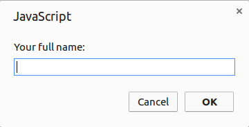

Thank you! Really, thank you for taking some of your precious time helping improve the MuleSoft Anypoint Connectors.
This guide will help you get started with the Anypoint Connector development environment. You will also learn the set of rules you are expected to follow in order to submit improvements and/or fixes to these projects.
1. Before You Begin
MuleSoft’s Anypoint Connectors can range from very simple to very complex projects. Before contributing code to them, it is important to understand the domain of the target system that the connector is going to communicate with.
Also, it is essential to have some knowledge of the Anypoint Connector DevKit, which is the backbone of the connector. We advise you to become familiar with the Connector Testing Framework, especially if you are creating new functionality that needs to be tested using that framework.
Lastly, having some experience working with the *Anypoint platform is a big advantage. We will give you some pointers to get started on each of these topics.
1.1. Starting Points
There are many resources available to help you become familiar with Mule and its features:
-
MuleSoft Cookbook Tutorial, a step-by-step guide for getting started with Connector Development.
-
The official documentation around the usage of the Anypoint Connector DevKit.
-
The official documentation for the Connector Testing Framework.
-
Mule User Guide, the official documentation for Mule ESB.
-
The books MuleSoft in Action (2nd Edition) and Getting Started with MuleSoft Cloud Connect. Both are excellent resources for learning how to use and extend Mule.
-
MuleSoft’s blog. The fastest way to learn about the new features in Anypoint Platform.
1.2. Visiting the Community Meeting Points
If you have gotten this far, you probably already have a new feature or a bug fix in mind to work on. This is great! Note, however, that there could be other members of the community with the same idea.
Before you begin, please take a few minutes to review community meeting points to make sure someone else hasn’t already taken on your challenge:
-
Search for existing GitHub issues to see if a bug or feature request has already been submitted.
-
Follow the MuleSoft Forum chatter to see if anyone else has started resolving the problem or initiated an improvement.
-
Scan StackOverflow to see if there is already a proposed solution to your problem.
If no one else has made your improvement or fix in the above-listed resources, log the issue by creating a GitHub tracking issue.
1.3. Understanding the Extension Mechanisms
Mule ESB has two different extension mechanisms for writing modules and connectors. Avoiding adding functionality to the project. Rather, using one of the mechanisms to extend Mule is probably the more favorable option. It is important to understand both.
The first and more intuitive mechanism for extensions is the Anypoint Connector DevKit, an annotation based framework for easy construction of extensions. This is the one we will be focusing on in this document.
The second choice is to extend Mule through the Extensions mechanism.
2. Setting up the Development Environment
While getting ready to contribute to any piece of software, there are several prerequisite components you will have to install. Plus, you will need to obtain the preexisting source code there may exist.
This section provides some guidelines for installing those components and downloading the source code.
2.1. Installing Prerequisites
Before you get started, you need to set yourself up with an environment in which to develop Anypoint Connectors. Your dev environment needs a few things:
-
A Java SDK.
-
A recent version of Maven.
-
A development environment tool or IDE (most preferably Anypoint Studio with DevKit plugin installed).
-
A new branch of code to work on.
2.2. Java
-
If you are working with Windows or Linux, install one of the following Java Development Kits on your local drive.
-
If you are working on a Mac, simply confirm that the JDK shipped with your Mac OS X is Java SE Development Kit 7 (also known as Java SE) or newer using the command
java -version. Then skip to step 4 below. -
Create an environment variable called
JAVA_HOME, setting it to the directory in which you installed the JDK. -
Update the
PATHenvironment variable so that it includes the path to JDK binaries. Add the following to thePATHvariable:-
On Windows
%JAVA_HOME%/bin -
On Linux or Mac OS X
$JAVA_HOME/bin
-
2.3. Maven
-
Download the Maven distribution from the Maven web site, then unpack it to a convenient folder on your local drive.
-
Create an environment variable called
M2_HOME, then set it to the folder into which you unpacked Maven. -
Update the
PATHenvironment variable to include the path to Maven binaries:-
On Windows
%M2_HOME%/bin -
On Linux or Mac OS X
$M2_HOME/bin
-
2.4. Getting the Source Code
MuleSoft Community Connectors source code lives on GitHub. Perform the following procedure to locate the code and get it onto your local drive.
If you are new to Git, consider reading Pro Git to learn the basics. Want a read-only version of the source code?
-
link:Create or log in to your GitHub account.
-
If you haven’t already done so, set up Git on your local drive.
-
Navigate to MuleSoft’s GitHub Connector page and select one of the repositories listed. For example, the Twitter Connector.

-
Click the Fork button at the top right corner of the page, then select your own git repository into which GitHub inserts a copy.
-
Prepare to Clone your forked repository from your GitHub account to your local drive via a secure file transfer connection. As per GitHub recommendation, we recommend using HTTPS to transfer the source code files to your local drive. However, if you prefer to establish a secure connection for transferring the files via SSH, follow GitHub procedure to generate SSH keys.
-
From the command line, create or navigate to an existing folder on your local drive into which you wish to store your forked clone of the connector source code.
-
Then, execute one of the following:
-
For HTTPS
git clone https://github.com/<username>/<repo-name> -
For SSH
git clone git@github.com:<username>/<repo-name>.git
-
-
Add the upstream repository so that you can pull changes and stay updated with changes to the connector code branch. From the command line, execute one of the following:
-
For HTTPS
git remote add upstream https://github.com/mulesoft/<repo-name>.git -
For SSH
git remote add upstream git@github.com:mulesoft/<repo-name>.git
-
|
Note
|
Read more about how to Fork a Repo on GitHub. |
2.5. Understanding the Build
This is a great moment to stop and read the MuleSoft Cookbook Tutorial. A correct understanding of how a Anypoint Connector project is organized and built is key to a productive development process.
We are ready to develop and implement our improvements. But, instead of doing it manually, we may want to configure an IDE for enhanced productivity. We will expand on this in the next section.
3. Configuring the IDE
This section offers tips for importing and working on connector source code in Anypoint Studio. There are no restrictions on the type of integration development environment you use to develop Anypoint Connectors. We simply opted for the Anypoint Studio with DevKit plugin installed, which is the preferred choice since it adds a lot of support tools.
3.1. Working with Anypoint Studio
Use Anypoint Studio to modify or add to your cloned version of the connector source code.
3.1.1. Importing
-
Download and install Anypoint Studio on your local drive.
-
Launch it.
-
Install Anypoint DevKit Plugin.
-
From the Help menu in Anypoint Studio, click Install New Software.
-
Open the Work with drop-down menu and select the Anypoint Addons Update Site.
NoteIf the Anypoint Addons Update Site is not available in the dropdown list, click Add and then copy the following URL to the repository location: *http://studio.mulesoft.org/r4/addons/beta* -
Check the Anypoint DevKit Plugin option and click Next.
-
Proceed through the remaining steps in the wizard to install.
-
Restart Studio.
-
-
Select File > Import.
-
In the Import wizard, click to expand the Anypoint Studio folder, then select Anypoint Connector Project from External Location, then click Next.
-
In the Select root directory field, use the Browse button to navigate to the directory into which you downloaded the cloned fork of the source code from your GitHub account.
-
Ensure the project is checked, then click Finish and wait for Studio to import the source code. This step may take a while as it needs to download all dependencies from the Maven repository.
-
Open source code files when you need to edit or add content.
-
Click the Save icon to save locally.
3.1.2. Testing
Use Maven to run unit tests on your project using the command:
mvn testIn addition to the unit tests, the Anypoint Connector project is normally packaged with a handful of functional tests. These tests are part of a JUnit Test Suite, called FunctionalTestSuite.
To run these tests, you can use the following command:
mvn test -Dtest=FunctionalTestSuiteOn occasion, some tests (that are not testing processors on the connector) require connectivity to the external system. These would be bundled together in a special test suite called SystemTestSuite. You can run those tests with:
mvn test -Dtest=SystemTestSuiteIn these last two cases, you need to provide a file containing the
credentials that allow the connector to talk to the remote system.
Place a file named automation-credentials.properties in the
src/test/resources folder in your project. This file is "Git-ignored" and
should never be added to the repository.
|
Note
|
Read more about MuleSoft’s Testing Conventions. |
3.1.3. Setting Startup Parameters
The table below lists a number of command-line parameters you can use to
alter Anypoint Studio startup behavior, if you wish to. Simply edit the
bundled file AnypointStudio.ini.
| Parameter | Action |
|---|---|
|
Enables clean registration of plug-in (some plug-ins do not always register themselves properly after a restart). |
|
Does not show Anypoint Studio or plug-in splash screens. |
|
Allows you to explicitly set which JDK to use. |
|
Examples that come with the full Mule distribution. |
|
Allows you to pass in standard VM arguments. |
4. Developing Your Contribution
Working directly on the master version of source code is strongly discouraged, since it would
likely result in merge conflicts with the original master repository. Instead, the recommended approach for contributing to any source code is to host your changes in the
feature branch. Anypoint Connector code is developed following the
GitFlow branching model.
|
Note
|
The articles A successful Git branching model (by Vincent Driessen) and Release Management with Gitflow (by Paul Serby) provide excellent starting points for getting familiar with GitFlow. |
4.1. Creating Your Feature Branch
Open a command line window and perform the following steps:
-
From your local drive, position on
developbranch:git checkout develop -
Create a new branch in which you can work on your bug fix or improvement using the command:
git checkout -b feature/yourGitHubIssueNumber
Now you should be able to compile your very first version of the connector source code. Unless you are using Anypoint Studio, you need only to instruct Maven to download all the libraries that are dependencies and compile the project, which can be achieved by executing the following command in the directory into which you cloned the source code:
mvn -DskipTests package|
Note
|
If this is your first time using Maven, the download may take several minutes to complete. |
Now that you are all set with a local development environment and your own branch of the source code, you’re ready get going!
The following steps briefly outline the development life-cycle to follow in order to develop and commit your changes in preparation for submission.
-
If you are using Anypoint Studio, make sure you read the previous section about IDE configuration.
-
Make sure you format your source code using the Formatting settings. This is to ensure you adhere to source code standards, thus increasing the likelihood that your changes will be merged into the connector source code.
-
Import the source code project into Anypoint Studio (or your IDE of choice), then work on your changes, fixes or improvements.
-
Debug and test your local version, resolving any issues that arise.
-
Save your changes locally.
-
Prepare your changes for a Pull Request by first squashing your changes into a single commit on your branch using the command:
git rebase -i -
Push your squashed commit to your branch on your GitHub repository. Refer to Git’s documentation for details on how to commit your changes.
-
Regularly update your branch with any changes or fixes applied to the
developbranch (remember this is the repository that will contain the latest changes of the connector). Refer to details below.
4.2. Updating Your Feature Branch
To ensure that your cloned version of source code remains up-to-date
with any changes uploaded to the connector branch, you
should regularly update your branch to rebase off of the latest version
of the develop.
-
Pull the latest changes from the upstream
developbranch using the following commands:
git fetch upstream
git fetch upstream --tags-
Merge the latest changes and updates from the
developbranch to your feature branch using the following command:
git merge upstream/develop-
Push any changes of
developbranch to your forked clone using the following commands:
git push origin feature/yourGitHubIssueNumber
git push origin --tags-
Access your
featurebranch once again (to continue coding), using the command:
git checkout dev/yourRepoName/bug/yourGitHubIssueNumber-
Rebase your branch from the latest version of
developbranch using the following command:
git rebase develop-
Resolve any conflicts on your feature branch that may appear.
-
Push the newly-rebased branch back to your fork on your git repository using the following command:
git push origin dev/yourRepoName/feature/yourGitHubIssueNumber -f4.3. Submitting a Pull Request
Ready to submit your patch for review and merging? Initiate a Pull Request (PR) on GitHub!
-
Review the MuleSoft Contributor’s Agreement. Before any contribution is accepted, we need you to run the following notebook script.

This script will ask you to login to GitHub and accept our Contributor’s Agreement, resulting in the creation of an issue in our contributors project with your name.
|
Note
|
Once you access the MuleSoft Contributor’s Agreement web site, perform these actions:
. Hit the Play notebook button (or the Run link) and follow the instructions as you are prompted through the screens. 
. Authenticate 
. Register Your Name  . Accept the Agreement 
. Now you’re ready to contribute! 
|
-
From the repository of your branch, click the Pull Request button.
-
In the Pull Request Preview dialog, provide a title and an optional description of your changes.
-
Review the commits that are part of your PR, then click Send Pull Request.
NoteRefer to GitHub’s detailed instructions for submitting a pull request. -
MuleSoft’s Connectors Developer Team will review the PR and may initiate discussion or ask questions about your changes in a Pull Request Discussion. If appropriate, the team will then merge your commits within the master branch. We will validate acceptance of the agreement at this step.
NoteIf you made changes or corrections to your commit after having submitted the PR, go back to the PR page and update the Commit Range (via the Commits tab), rather than submitting a new pull request.
5. Summary
This guide started with pointing to different sources of information around MuleSoft and the Mule’s community meeting points on the web. These were useful for understanding where MuleSoft is going and to have contact with the rest of the community for help or to spark discussion.
In order to set up our development environment, we went to install some prerequisites. Once we had those ready, we downloaded the source code.
At that point we were almost ready to develop our improvements. We just needed to configure Anypoint Studio to develop or debug MuleSoft Anypoint Connector code.
Afterwards, we were ready to develop our contribution: we created our very own feature branch to develop the improvement and we learned how to keep it updated in order to submit a pull request to the main MuleSoft Anypoint Conntectors repository.